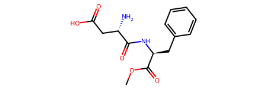
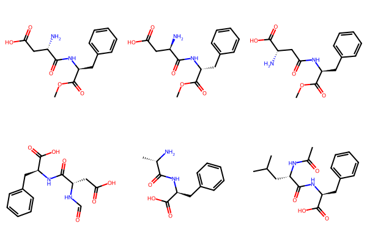
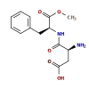

Computing InChIs
Contents
Computing InChIs#
How to Calculate InChIs from SMILES Using RDKit or Open Babel#
Vincent Scalfani
Adapted from CPCDS 2021 Digital IUPAC Session - 51st IUPAC General Assembly
Reuse: this tutorial is included in the IUPAC FAIR Chemistry Cookbook MIT license.
1. Import RDKit Modules#
from rdkit import Chem
from rdkit.Chem import Draw
# RDKit Version
from rdkit import rdBase
print(rdBase.rdkitVersion)
2022.09.3
2. Create Molecular Object from SMILES#
# PubChem CID: 134601
m = Chem.MolFromSmiles('COC(=O)[C@H](CC1=CC=CC=C1)NC(=O)[C@H](CC(=O)O)N')
m

# Internally, we have created an RDKit molecular object
print(m)
<rdkit.Chem.rdchem.Mol object at 0x10fa50200>
3. Calculate InChI#
Chem.MolToInchi(m)
'InChI=1S/C14H18N2O5/c1-21-14(20)11(7-9-5-3-2-4-6-9)16-13(19)10(15)8-12(17)18/h2-6,10-11H,7-8,15H2,1H3,(H,16,19)(H,17,18)/t10-,11-/m0/s1'
Chem.MolToInchiKey(m)
'IAOZJIPTCAWIRG-QWRGUYRKSA-N'
4. Calculate InChIs for a List of Molecules#
# Import a file of SMILES
smiles_list = []
with open('my_smiles.smi') as infile:
for smi in infile:
smiles_list.append(smi.rstrip()) # rstrip removes newline
print(smiles_list)
['COC(=O)[C@H](CC1=CC=CC=C1)NC(=O)[C@H](CC(=O)O)N', 'COC(=O)[C@@H](CC1=CC=CC=C1)NC(=O)[C@@H](CC(=O)O)N', 'COC(=O)[C@H](CC1=CC=CC=C1)NC(=O)C[C@@H](C(=O)O)N', 'C1=CC=C(C=C1)C[C@@H](C(=O)O)NC(=O)[C@H](CC(=O)O)NC=O', 'C[C@@H](C(=O)N[C@@H](CC1=CC=CC=C1)C(=O)O)N', 'CC(C)C[C@@H](C(=O)N[C@@H](CC1=CC=CC=C1)C(=O)O)NC(=O)C']
# Or create a list directly
smiles_list = ['COC(=O)[C@H](CC1=CC=CC=C1)NC(=O)[C@H](CC(=O)O)N',
'COC(=O)[C@@H](CC1=CC=CC=C1)NC(=O)[C@@H](CC(=O)O)N',
'COC(=O)[C@H](CC1=CC=CC=C1)NC(=O)C[C@@H](C(=O)O)N',
'C1=CC=C(C=C1)C[C@@H](C(=O)O)NC(=O)[C@H](CC(=O)O)NC=O',
'C[C@@H](C(=O)N[C@@H](CC1=CC=CC=C1)C(=O)O)N',
'CC(C)C[C@@H](C(=O)N[C@@H](CC1=CC=CC=C1)C(=O)O)NC(=O)C']
# Next,loop through the smiles_list and create RDKit molecular objects
mols = [Chem.MolFromSmiles(smi) for smi in smiles_list]
mols
[<rdkit.Chem.rdchem.Mol at 0x10fa50580>,
<rdkit.Chem.rdchem.Mol at 0x10fa50660>,
<rdkit.Chem.rdchem.Mol at 0x10fa50a50>,
<rdkit.Chem.rdchem.Mol at 0x10fa50ac0>,
<rdkit.Chem.rdchem.Mol at 0x10fa50b30>,
<rdkit.Chem.rdchem.Mol at 0x10fa50ba0>]
# Display the molecules in a grid
Draw.MolsToGridImage(mols, molsPerRow=3, useSVG=False)

# Loop through mols (molecular objects) and calculate InChIs
InChIs = [Chem.MolToInchi(mol) for mol in mols]
InChIs
['InChI=1S/C14H18N2O5/c1-21-14(20)11(7-9-5-3-2-4-6-9)16-13(19)10(15)8-12(17)18/h2-6,10-11H,7-8,15H2,1H3,(H,16,19)(H,17,18)/t10-,11-/m0/s1',
'InChI=1S/C14H18N2O5/c1-21-14(20)11(7-9-5-3-2-4-6-9)16-13(19)10(15)8-12(17)18/h2-6,10-11H,7-8,15H2,1H3,(H,16,19)(H,17,18)/t10-,11-/m1/s1',
'InChI=1S/C14H18N2O5/c1-21-14(20)11(7-9-5-3-2-4-6-9)16-12(17)8-10(15)13(18)19/h2-6,10-11H,7-8,15H2,1H3,(H,16,17)(H,18,19)/t10-,11-/m0/s1',
'InChI=1S/C14H16N2O6/c17-8-15-10(7-12(18)19)13(20)16-11(14(21)22)6-9-4-2-1-3-5-9/h1-5,8,10-11H,6-7H2,(H,15,17)(H,16,20)(H,18,19)(H,21,22)/t10-,11-/m0/s1',
'InChI=1S/C12H16N2O3/c1-8(13)11(15)14-10(12(16)17)7-9-5-3-2-4-6-9/h2-6,8,10H,7,13H2,1H3,(H,14,15)(H,16,17)/t8-,10-/m0/s1',
'InChI=1S/C17H24N2O4/c1-11(2)9-14(18-12(3)20)16(21)19-15(17(22)23)10-13-7-5-4-6-8-13/h4-8,11,14-15H,9-10H2,1-3H3,(H,18,20)(H,19,21)(H,22,23)/t14-,15-/m0/s1']
1. Import Open Babel Modules#
# Open Babel v3.1.1
from openbabel import openbabel as ob
from openbabel import pybel
2. Create Molecular Object from SMILES#
m = pybel.readstring("smi", "COC(=O)[C@H](CC1=CC=CC=C1)NC(=O)[C@H](CC(=O)O)N")
m

# Internally, we have created an Open Babel molecular object
print(type(m))
<class 'openbabel.pybel.Molecule'>
3. Calculate InChI#
# Set up InChI conversion
conv = pybel.ob.OBConversion()
conv.SetOutFormat("inchi")
True
# Calculate InChI
inchi_output = conv.WriteString(m.OBMol)
print(inchi_output)
InChI=1S/C14H18N2O5/c1-21-14(20)11(7-9-5-3-2-4-6-9)16-13(19)10(15)8-12(17)18/h2-6,10-11H,7-8,15H2,1H3,(H,16,19)(H,17,18)/t10-,11-/m0/s1
# Set up InChIKey conversion
conv = pybel.ob.OBConversion()
conv.SetOutFormat("inchikey")
True
# Calculate InChIKey
inchikey_output = conv.WriteString(m.OBMol)
print(inchikey_output)
IAOZJIPTCAWIRG-QWRGUYRKSA-N
4. Calculate InChIs for a List of Molecules#
# Import a file of SMILES
smiles_list =[]
with open('my_smiles.smi') as infile:
for smi in infile:
smiles_list.append(smi.rstrip()) # rstrip removes newline
print(smiles_list)
['COC(=O)[C@H](CC1=CC=CC=C1)NC(=O)[C@H](CC(=O)O)N', 'COC(=O)[C@@H](CC1=CC=CC=C1)NC(=O)[C@@H](CC(=O)O)N', 'COC(=O)[C@H](CC1=CC=CC=C1)NC(=O)C[C@@H](C(=O)O)N', 'C1=CC=C(C=C1)C[C@@H](C(=O)O)NC(=O)[C@H](CC(=O)O)NC=O', 'C[C@@H](C(=O)N[C@@H](CC1=CC=CC=C1)C(=O)O)N', 'CC(C)C[C@@H](C(=O)N[C@@H](CC1=CC=CC=C1)C(=O)O)NC(=O)C']
# Next,loop through the smiles_list and create OB molecular objects
ms = [pybel.readstring("smi", m) for m in smiles_list]
ms
[<openbabel.pybel.Molecule at 0x110152a10>,
<openbabel.pybel.Molecule at 0x110152aa0>,
<openbabel.pybel.Molecule at 0x110152fe0>,
<openbabel.pybel.Molecule at 0x110153370>,
<openbabel.pybel.Molecule at 0x110152860>,
<openbabel.pybel.Molecule at 0x110152380>]
# Set up InChI conversion
conv = pybel.ob.OBConversion()
conv.SetOutFormat("inchi")
# Loop through mols (molecular objects) and calculate InChIs
InChIs = [conv.WriteString(m.OBMol).rstrip() for m in ms]
InChIs
['InChI=1S/C14H18N2O5/c1-21-14(20)11(7-9-5-3-2-4-6-9)16-13(19)10(15)8-12(17)18/h2-6,10-11H,7-8,15H2,1H3,(H,16,19)(H,17,18)/t10-,11-/m0/s1',
'InChI=1S/C14H18N2O5/c1-21-14(20)11(7-9-5-3-2-4-6-9)16-13(19)10(15)8-12(17)18/h2-6,10-11H,7-8,15H2,1H3,(H,16,19)(H,17,18)/t10-,11-/m1/s1',
'InChI=1S/C14H18N2O5/c1-21-14(20)11(7-9-5-3-2-4-6-9)16-12(17)8-10(15)13(18)19/h2-6,10-11H,7-8,15H2,1H3,(H,16,17)(H,18,19)/t10-,11-/m0/s1',
'InChI=1S/C14H16N2O6/c17-8-15-10(7-12(18)19)13(20)16-11(14(21)22)6-9-4-2-1-3-5-9/h1-5,8,10-11H,6-7H2,(H,15,17)(H,16,20)(H,18,19)(H,21,22)/t10-,11-/m0/s1',
'InChI=1S/C12H16N2O3/c1-8(13)11(15)14-10(12(16)17)7-9-5-3-2-4-6-9/h2-6,8,10H,7,13H2,1H3,(H,14,15)(H,16,17)/t8-,10-/m0/s1',
'InChI=1S/C17H24N2O4/c1-11(2)9-14(18-12(3)20)16(21)19-15(17(22)23)10-13-7-5-4-6-8-13/h4-8,11,14-15H,9-10H2,1-3H3,(H,18,20)(H,19,21)(H,22,23)/t14-,15-/m0/s1']
References
[1] RDKit Documentation: https://www.rdkit.org/docs/index.html
[2] Open Babel Python Documentation: https://open-babel.readthedocs.io/en/latest/UseTheLibrary/Python.html